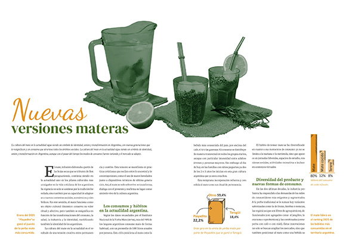
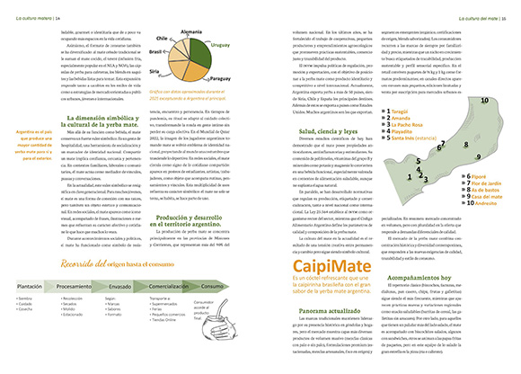
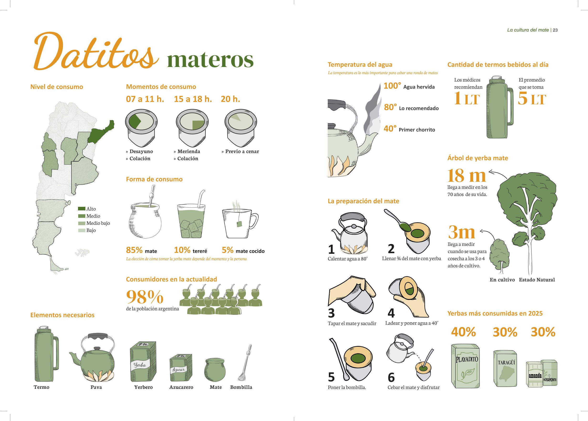
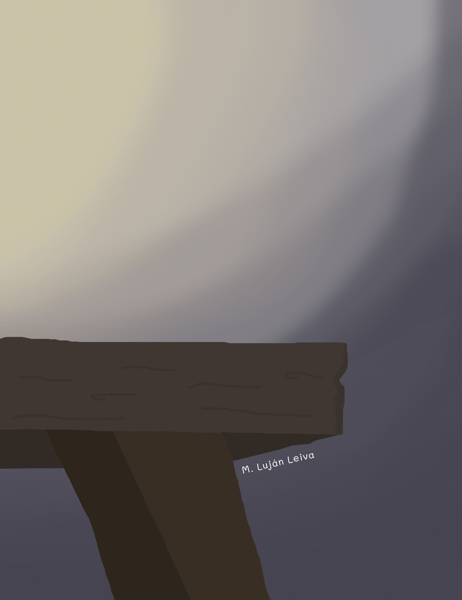
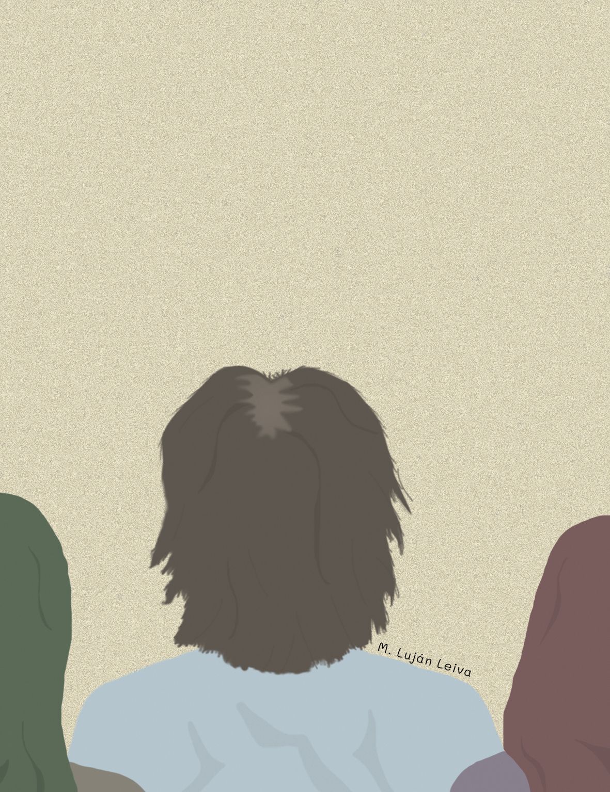
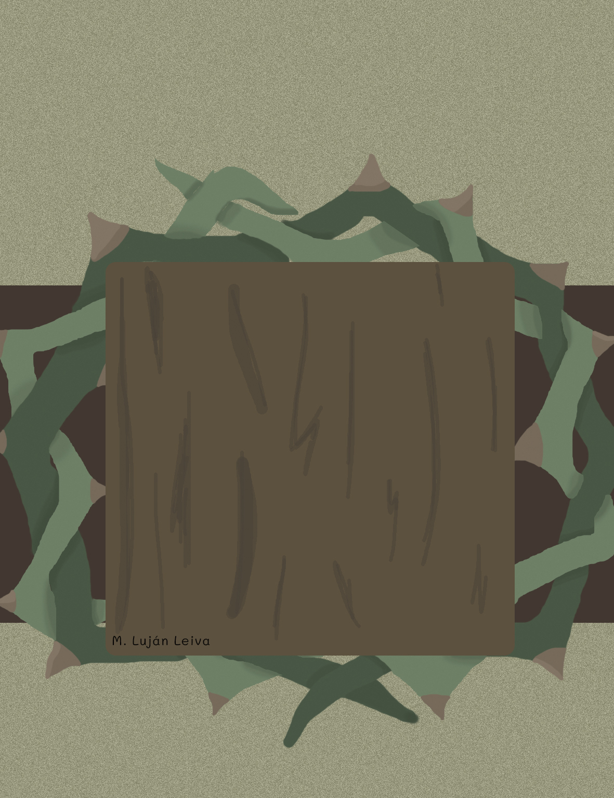
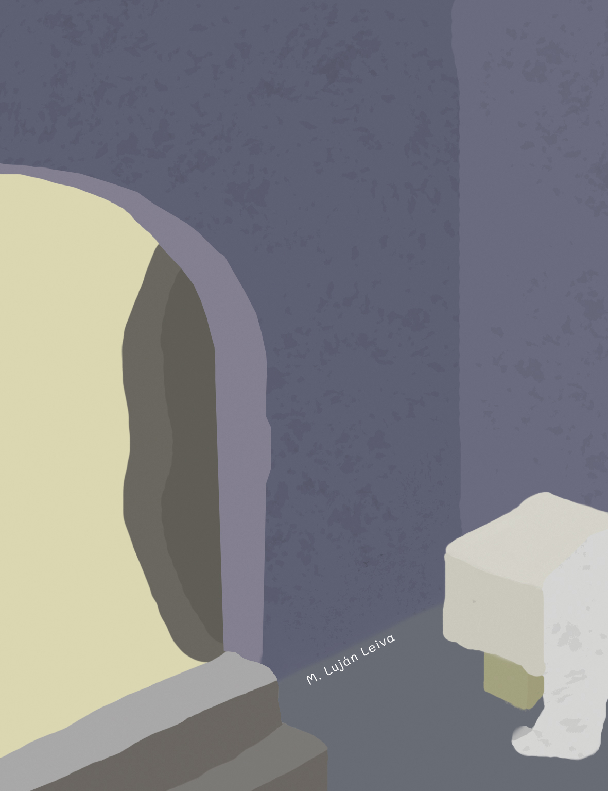
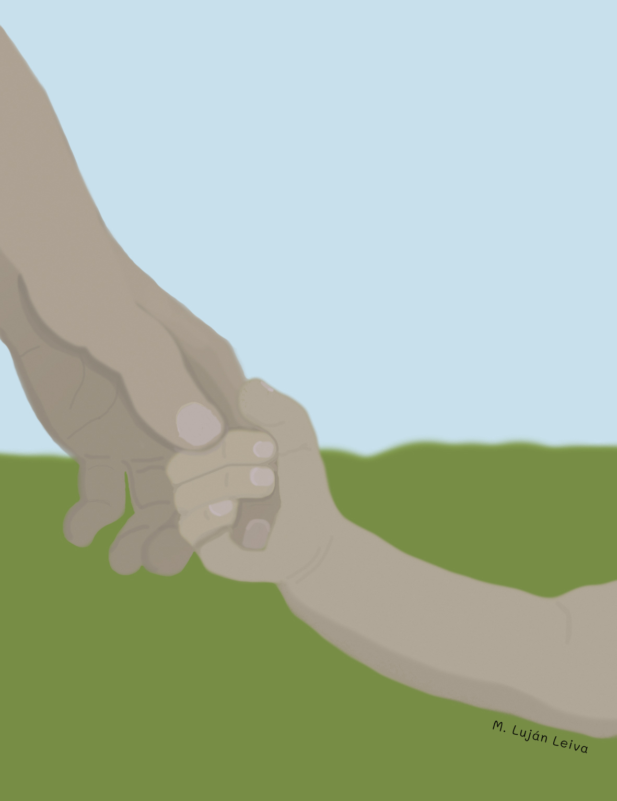

Porfolio
Te muestro algunos trabajos que hice en la universidad: Afiches - Revistas - Libros - Ilustraciones - Presentaciones
Editorial





• Libro de tapa dura, con cosido artesanal. Este fue el trabajo final de Espacio Tipográfico 2 con temática de plantas, que incluye ilustraciones, texto y fotografías jerarquizados por medio de un grilla.
Ilustraciones







• En estas ilustraciones se combinan diferentes técnicas y estilos. Por un lado están las ilustraciones 100% digitales y por otro, las que partieron de un boceto analógico.